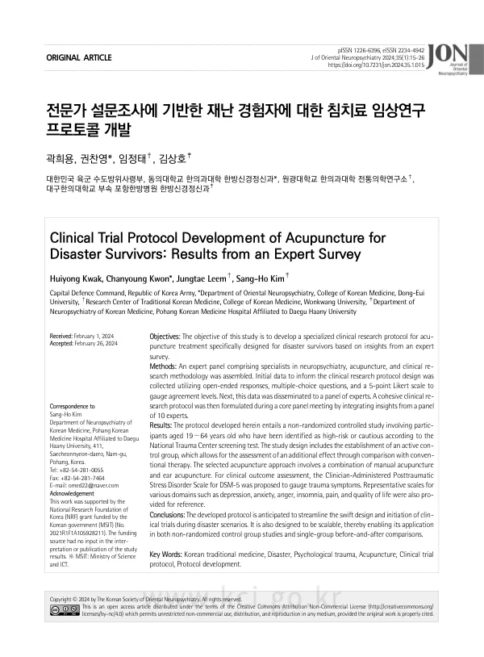

Clinical Trial Protocol Development of Acupuncture for Disaster Survivors: Results from an Expert Survey
Kwak H, Kwon C, Leem J, Kim SH
Journal of Oriental Neuropsychiatry 35(1):15-26

첫 장 · 오픈액세스First page · open access
논문 소개Summary
재난 현장에서 시행할 침치료 임상연구 프로토콜을 전문가 설문으로 만들었습니다. 연구진이 주제범위 문헌고찰로 초안을 짜고, 침구·한방신경정신과 전문의와 임상연구방법론 전문가 10인에게 물어 3분의 2 이상 동의한 항목을 추렸습니다. 설계는 비무작위 대조군 연구, 대상은 19~64세 가운데 국가트라우마센터 선별검사의 관심군과 고위험군으로 정하고 재난의 종류는 제한하지 않았습니다. 치료는 기존 치료에 수기침과 이침을 더하고 활성 대조군을 두며 유침 20분, 주 2회 이상, 4주 이상으로 정했고, 평가는 CAPS-5 를 주 척도로 삼았습니다. 저자들은 설문을 한 차례만 시행했고 한의계 전문가만 참여했다는 점을 한계로 들었습니다.
A study that built a clinical trial protocol for acupuncture usable at an actual disaster site, by means of an expert survey. The research team drafted the protocol from a preceding scoping review, then put it to ten experts in acupuncture and moxibustion, Korean neuropsychiatry and clinical research methodology, treating items with agreement from two thirds or more as consensus. The resulting design is a non-randomised controlled study in adults aged 19 to 64 identified as the cautious or high-risk group by National Trauma Center screening, with no restriction on the type of disaster. Treatment adds manual and ear acupuncture to conventional care against an active control, with 20 minutes of needle retention at least twice weekly for at least four weeks. The Clinician-Administered PTSD Scale for DSM-5 was chosen as the primary measure. The authors note as limitations that the survey ran only one round and that only Korean medicine experts took part.
인용Cite
Kwak H, Kwon C, Leem J, Kim SH. Clinical Trial Protocol Development of Acupuncture for Disaster Survivors: Results from an Expert Survey. Journal of Oriental Neuropsychiatry. 2024;35(1):15-26. doi:10.7231/jon.2024.35.1.015